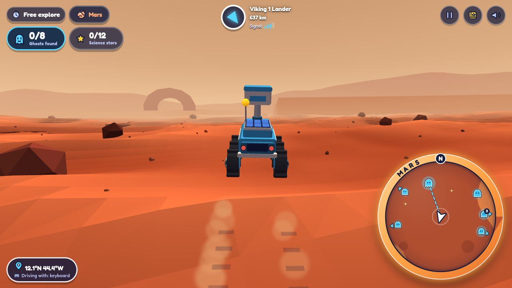
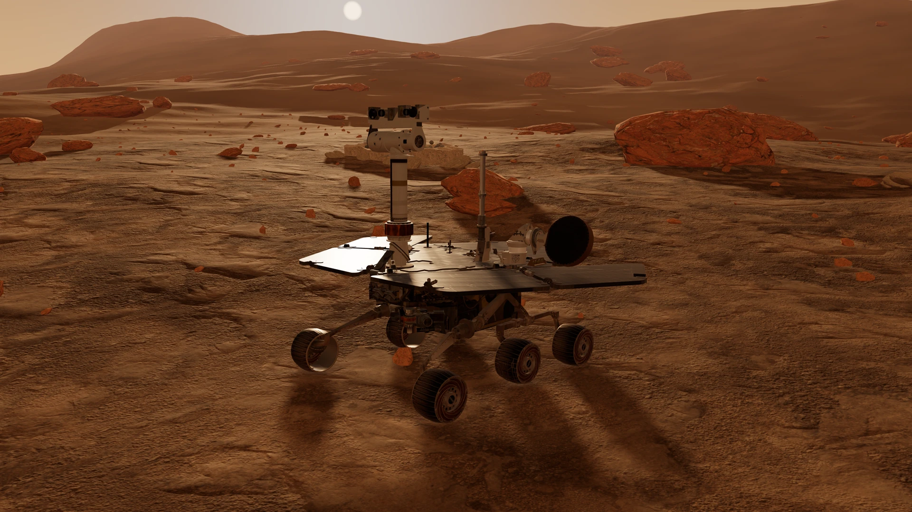

Ghost Rovers
Explore the Moon and Mars, find forgotten space machines, and discover their stories.
Play game
Last Light
Drive Opportunity across Mars, uncover evidence of ancient water, and send your discoveries home.
Play game